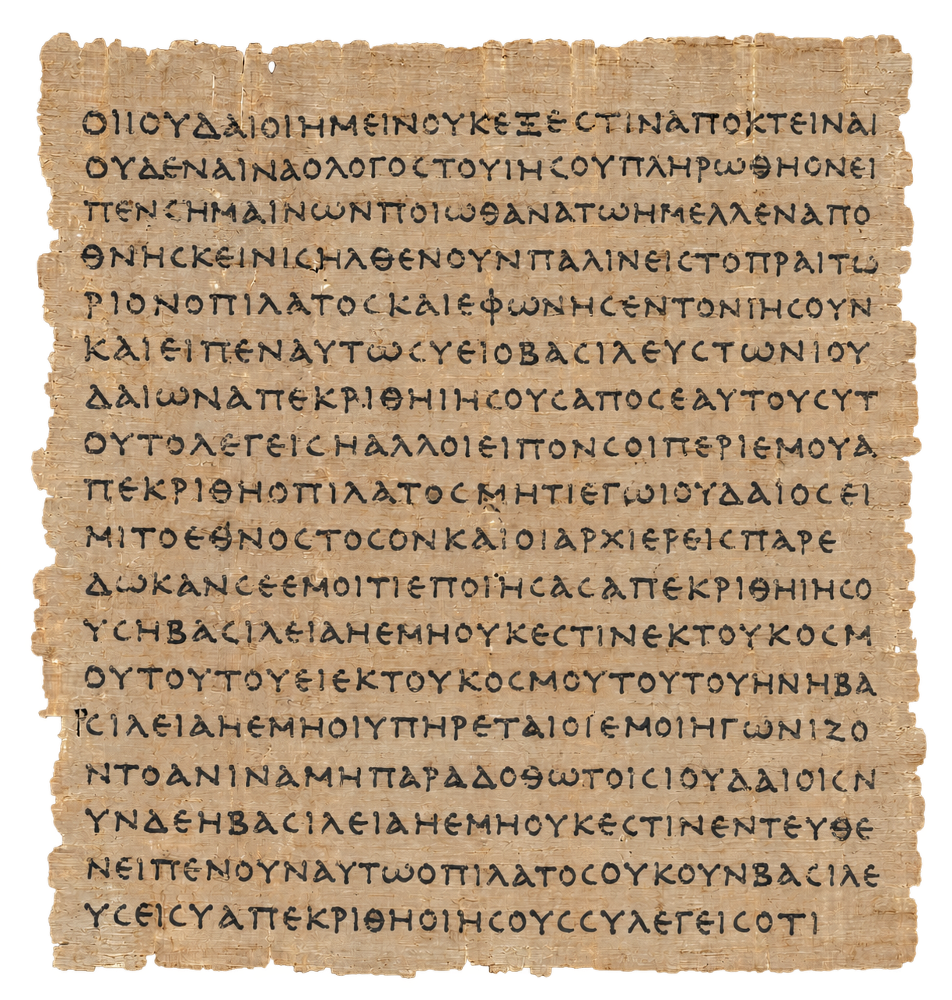
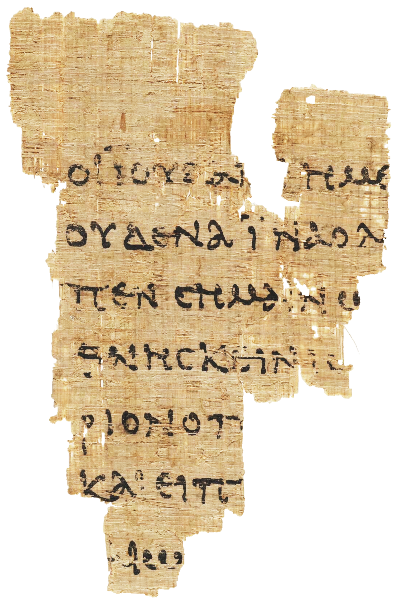
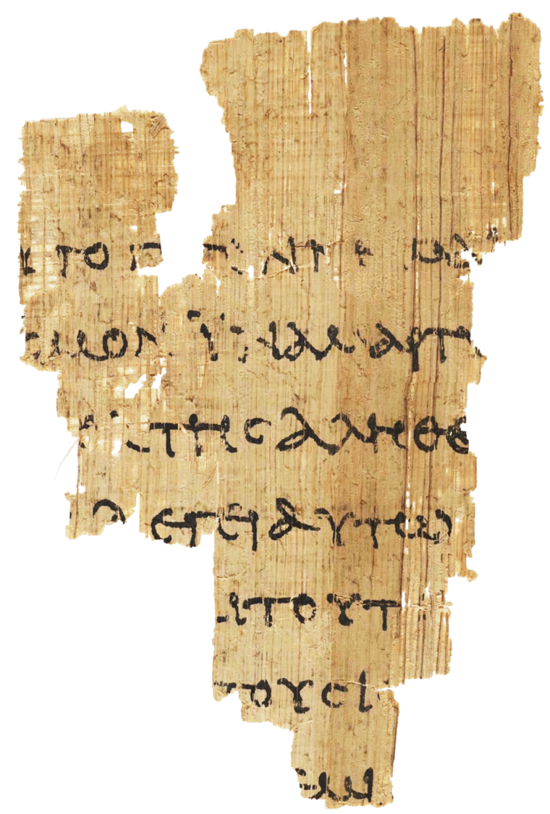

P52 is small, but its story is enormous.
It provides a physical window into the early
transmission of the Gospel of John and gives
visitors an opportunity to examine an ancient
New Testament witness with their own eyes.
"What is Truth?"
The surviving text on the fragment comes from John 18, verses 31-33 and 37-38,
detailing the account of Jesus on trial
before Pilate, hours before His crucifixion. The folio (page) that P52 was originally part of would have included
Pilate's timeless question "What is truth?" to the One who is the Way, the life, and the Truth (John 14:6).
Ancient Greek
The fragment preserves New Testament text
in 1st Century Koine Greek as part of the
Alexandrian-text type, or transmission family, of manuscripts.
It is also written in uncial, or upper-case, Greek, which
was a feature of the earliest Christian scribes, before
they moved to minuscule script (similar to lower case and cursive) centuries later.
Codex Evidence
Papyrus 52 (P52) attests to the early Christian affinity for the codex (book),
as writing on both sides indicates it came from a codex rather than a scroll.
This compact format was especially suited to Christians carrying, copying,
and sharing the Scriptures as they fullfilled the Great Commission (Matthew 28:19-20).
Interactive Manuscript Exhibit
Explore Papyrus 52
Take a closer look at the earliest surviving
witness to the Gospel
DRAG TO EXPLORE
•
SCROLL TO ZOOM
•
CLICK THE CRIMSON MARKERS
Illustrative recto reconstruction · Original fragment outlined in gold
P52 • RECTO



Line 01 • John 18:31
“… ΟΙ ΙΟΥΔΑΙΟI ΗΜEIN …”
“… οἱ Ἰουδαῖοι ἡμῖν …”
“…hoi Ioudaioi eimin…”
“…The Jews, 'We…”
Gold= shown letters · Gray= reconstructed letters
Line 02 • JOHN 18:31-32 Transition
“… ΟΥΔΕΝΑ ΙΝΑ Ο ΛΟΓΟΣ …”
“… οὐδένα ἵνα ὁ λόγος …”
“…oudena ina o logos…”
“…anyone,' the word …”
Gold= shown letters · Gray= reconstructed letters
Line 03 • John 18:32
“… ΕΙΠΕΝ ΣΗΜΑΙΝΩΝ …”
“… εἶπεν σημαίνων …”
“…eipen seimainoun…”
“…He spoke, signifying…”
Gold= shown letters · Gray= reconstructed letters
Line 04 • John 18:32-33 transition
“… ΑΠΟΘΝΗΣΚΕΙΝ ΙΣΗΛΘΕΝ …”
“… ἀποθνῄσκειν ἰσῆλθεν …”
“…apothneskein iseilthen…”
“…to die. Entered…”
Gold= shown letters · Gray= reconstructed letters
Line 05 • John 18:33
“… ΠΡΑΙΤΩΡΙΟΝ Ο ΠΙΛΑΤΟΣ …”
“… πραιτώριον ὁ Πιλᾶτος …”
“… praitorion ho Pilatos…”
“…Praetorium of Pilate…”
Gold= shown letters · Gray= reconstructed letters
Line 06 • John 18:33
“… ΚΑΙ ΕΙΠΕΝ …”
“… καὶ εἶπεν …”
“… kai eipen…”
“…and said…”
Gold= shown letters · Gray= reconstructed letters
Line 07 • End of John 18:33
“… ΙΟΥΔΑΙΩΝ ”
“… Ἰουδαίων ”
“… Ioudaion.”
“…Jews?”
Gold= shown letters · Gray= reconstructed letters
"In the beginning was the λόγος"
Lambda (Λ/λ)
Look closely at the Λ (lambda) here, beginning the word λόγος (logos). In the context of this passage, λόγος refers to the words Jesus previously spoke (Matthew 20:18-19) prophesying of His future death.
But, here, we are also invited to recall the first time John wrote λόγος , at the beginning of his εὐαγγέλιον (gospel) in John 1:1 –
“In the beginning was the Word, and the Word was with God, and the Word was God.”
The connection becomes even more striking when we remember Genesis 1, where God brings creation into existence through His spoken word: “And God said…”
In John’s Gospel, the eternal Logos is not merely a spoken word, but Christ Himself—the divine Word through Whom and for Whom all things were made (Colossians 1:16).
LINE 01 • JOHN 18:37
"...ΤΟΥΤΟ ΓΕΓΕΝΝΗΜΑΙ..."
“...τοῦτο γε γέννημαι...”
“...touto ge gennēmai...”
“…this I have been born…”
Gold= shown letters · Gray= reconstructed letters
LINE 02 • JOHN 18:37
"...ΚΟΣΜΟΝ ΙΝΑ ΜΑΡΤΥΡΗΣΩ..."
“...Κόσμον ἵνα μαρτυρήσω...”
“...Kosmon hina martyrēsō...”
“…world so that I would testify…”
Gold= shown letters · Gray= reconstructed letters
LINE 03 • JOHN 18:37
"...ΕΚ ΤΗΣ ΑΛΗΘΕΙΑΣ..."
“...ἐκ τῆς ἀληθείας...”
“...ek tēs alētheias...”
“…of the truth…”
Gold= shown letters · Gray= reconstructed letters
LINE 04 • JOHN 18:38
"ΛΕΓΕΙ ΑΥΤΩ..."
“Λέγει αὐτῷ...”
“Legei autō”
“Said to Him…”
Gold= shown letters · Gray= reconstructed letters
LINE 05 • JOHN 18:38
"...ΚΑΙ ΤΟΥΤΟ..."
“...kαὶ τοῦτο...”
“...kai touto...”
“…and this…”
Gold= shown letters · Gray= reconstructed letters
LINE 06 • JOHN 18:38
"...ΤΟΥΣ ΙΟΥΔΑΙΟΥΣ..."
“...τοὺς Ἰουδαίους...”
“...tous Ioudaious...”
“…the Jews…”
Gold= shown letters · Gray= reconstructed letters
LINE 07 • JOHN 18:38
"...ΟΥΔΕΜΙΑΝ..."
“...οὐδεμίαν...”
“...oudemian...”
“…not one…”
Gold= shown letters · Gray= reconstructed letters
100%
Want to Hold the Story in Your Hands?
Explore our handmade P52
replicas designed to make this remarkable
piece of manuscript history tangible.